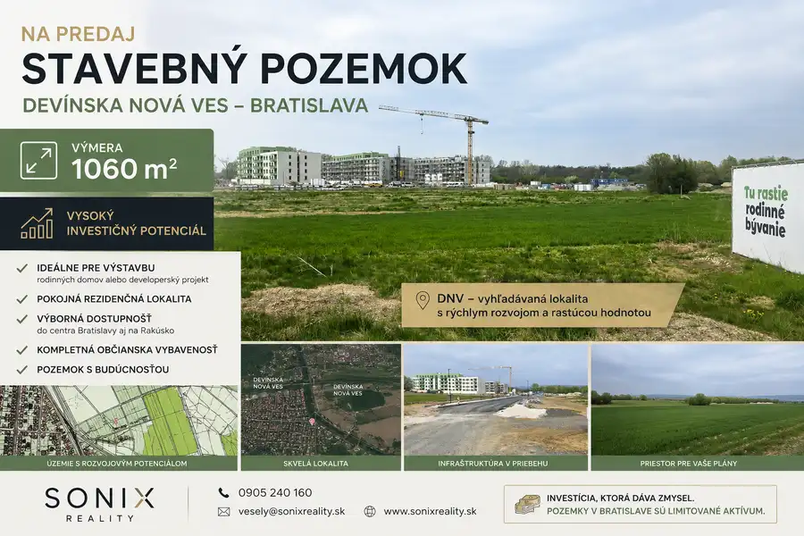
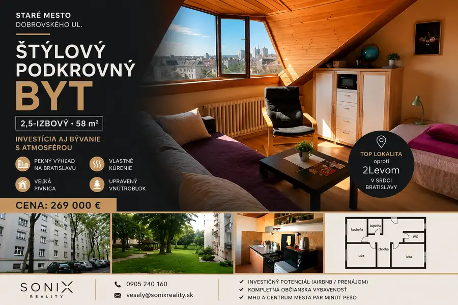
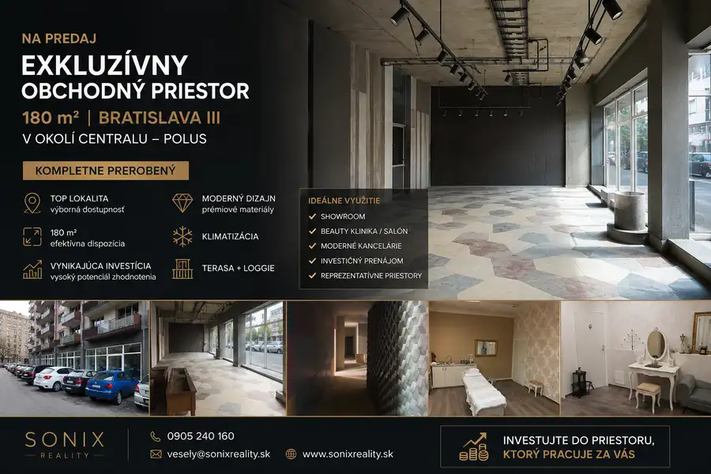

Na predaj 2 novostavby rodinných domov v obci Kútniky pri Dunajskej Strede
Kútniky
- Plocha142 m²
- StavNovostavba
- Energetická triedaA
O nehnuteľnosti
Moderné bývanie s veľkým pozemkom a možnosťou ďalšej investícieRealitná kancelária Sonix Reality ponúka na predaj dva samostatné novopostavené 4-izbové rodinné domy v pokojnej a vyhľadávanej lokalite obce Kútniky, len pár minút od Dunajskej Stredy.Domy sú situované na priestranných pozemkoch a ponúkajú ideálnu kombináciu komfortného bývania, súkromia a investičného potenciálu.Rodinný dom RD-1Úžitková plocha: cca 102 m² – zastavaná 142 m2Pozemok: cca 604 m² + podiel na prístupovej ceste 163 m2 – SPOLU : 767 m2TerasaSamostatný šatníkVeľká kúpeľňaTechnická miestnosťPodlahové kúrenieVšetky inžinierske sieteNa predaj nový tehlový 4 izb. samostatný RD – bungalov v stave holodom má pozemok 604m2 z toho zastavaná plocha domu 142 m + podiel na prístupovej ceste 163 m2 – pozemok spolu 767 m2, šírka 16 m. Cena domu číslo 1 v holodome : AKCIA: 189 900,- €Možnosť dokončenia na klúč : parkety, sanita, bojler, dvere, obklady a dlažby – orientačne okolo 20 000,- €.Rodinný dom RD-2Úžitková plocha: cca 102 m² – zastavaná 141 m2Pozemok: cca 759 m²+ podiel na prístupovej ceste 163 m2 – SPOLU : 922 m2TerasaSamostatný šatníkVeľká kúpeľňaTechnická miestnosťPodlahové kúrenieVšetky inžinierske sieteDOM 2 : Cena druhého domu ktorý je v stave hrubej stavby s oknami, trativodmi zo strechy, rozvodmi a s pripojením na IS Je v 186 000,- €. .Výhodou je aj zadný prístup na pozemok po nespevnenej obecnej ceste, a ďalšou výhodou že si dom môžete dokončiť sami alebo Vám ho dokončíme do štádia ktoré budete chcieť.Možnosť dokúpenia ďalšieho stavebného pozemkuVýnimočnou výhodou tejto ponuky je možnosť dokúpenia samostatného pozemku pred domami s výmerou približne 334 m².Pozemok je vhodný napríklad na:výstavbu garáže alebo dielne,podnikateľské účely,skladové priestory,parkovanie viacerých vozidiel,záhradný alebo rekreačný priestor,budúcu investíciu.Premyslený pôdorysDomy disponujú moderným dispozičným riešením:vstupná hala,technická miestnosť,samostatné WC,priestranná obývacia izba prepojená s kuchyňou,tri samostatné izby,samostatný šatník,veľká kúpeľňa s vaňou, sprchovým kútom, dvojitým umývadlom a WC,terasa orientovaná do záhrady.Výborná lokalitaObec Kútniky patrí medzi najžiadanejšie lokality v okolí Dunajskej Stredy.Výhody lokality:Dunajská Streda – 2 kmRýchle napojenie na BratislavuKompletná občianska vybavenosť v blízkom okolíPokojné prostredie mimo hlavnej premávkyIdeálne pre rodiny aj investorovInvestícia s budúcnosťouTáto ponuka predstavuje výbornú príležitosť pre rodinné bývanie aj investíciu. Vďaka veľkým pozemkom, možnosti rozšírenia o ďalší pozemok a výbornej dostupnosti ide o nehnuteľnosť s vysokým potenciálom rastu hodnoty.Pre viac informácií alebo obhliadku nás neváhajte kontaktovať.Sonix Reality +421 905 240 160 vesely@sonixreality.sk www.sonixreality.skKonštrukcia: 30 cm tehla + 15 cm zateplenie ,strecha samonosná valbová (väzník) – možnosť kedykoľvek otvoriť priestor a zrušiť vnútorne priečky.Strecha betonová škridla.Inžinierske siete:všetky IS – Dom je napojený na ele. prípojku – kúrenie je podlahové elektrické,mestská pitná vodu,kanalizácia,plyn je na pozemku,studňa na pozemku,urobené trativody na vodu zo strechy. Fotky a cena v momentálnom dokončení holodom: plastové okná a dvere 3 sklo, dokončená elektrika, podlahy, vodoinštalácie, ele. podlahové kúrenie, stierky ,stropy, 2x maľovka , zateplenie… Na 2023 m2 pozemku budú stáť 2 bungalovy plus malý murovaný domček s pozemkom 334 m2 – ktorý je tiež v ponuke.. Všetky IS, vhodné na rodinné bývanie aj podnikanie. Možnosť kúpiť všetko spolu – cena dohodou , alebo samostatne. Predný plot je dočasný a po odstránení vznikne pohodlný a komfortný príjazd a výjazd + parkovanie na pozemok a po vybetónovanej ceste až k domu. Každý dom má pozemok od prednej časti domu 10m čo umožňuje parkovanie pred domom.Lokalita:Obec Kútniky sa nachádza v okrese Dunajská Streda, v srdci Žitného ostrova, známeho svojou úrodnou pôdou a príjemným vidieckym prostredím. Termálne kúpalisko 5 km. Mestská časť Töböréte je lokalita, ideálna na bývanie aj podnikanie, s dobrou dostupnosťou do Dunajskej Stredy len 2 km a okolitých miest. V obci nájdete základnú občiansku vybavenosť, ako sú obchody, pohostinstvo, futballové ihrisko, vlaková zástavku, škola 1-4, škôlka a služby. Výhodou je aj rýchle napojenie na cestnú infraštruktúru, ktoré umožňuje jednoduché dochádzanie za prácou či voľnočasovými aktivitami, iba 35 minút od Bratislavy. Vďaka tomu je nehnuteľnosť vhodná ako domov pre rodinu alebo ako investičná príležitosť na prenájom či podnikanie. V krátkej budúcnosti bude pokračovať diaľnica R7 smerom Lučenec a bude napojenie cca 3 km čím sa hlavný ťah na Komárno zmenší.
Parametre
| Druh | Rodinný dom |
|---|---|
| Dátum zverejnenia | 13. 10. 2025 |
| Dĺžka pozemku | 45 |
| Energetický certifikát budovy | A |
| Energie | 120 |
| Plocha pozemku | 763 m² |
| Počet izieb / miestností | 4 |
| Počet kúpeľní | 1 |
| Počet nadzemných podlaží | 1 |
| Počet spální | 1 |
| Rok výstavby | 2025 |
| Stav nehnuteľnosti | Novostavba |
| Terén pozemku | Rovinatý |
| Typ | Predaj |
| Typ konštrukcie | Tehlová |
| Vybavenie | Sklad |
| Vykurovanie | Podlahové |
| Zastavaná plocha | 142 m² |
| Úžitková plocha | 142 m² |
| Šírka pozemku | 16 |
Kde to je


Mohlo by Vás zaujímať

PozemokNové6 329 000 €Investičný stavebný pozemok v Bratislave – Devínska Nová Ves Devínska Nová Ves, Bratislava 1060 m² Sonix Reality ponúka exkluzívne na predaj atraktívny stavebný pozemok s výmerou 1060 m² vo vyhľadávanej lokalite Bratislava – Devínska Nová…
BytNové10 299 000 €Štýlový podkrovný byt v srdci Starého Mesta Bratislavy – investícia aj bývanie s atmosférou Staré Mesto, Bratislava 2-izbový58 m²5. podlažie Sonix Reality ponúka na predaj atraktívny 2,5-izbový podkrovný byt vo vyhľadávanej lokalite Starého Mesta na Dobrovského ulici, priamo oproti…
Komerčné priestoryNové5 700 000 €Exkluzívny obchodný priestor v Bratislave – pri Centrali Nové Mesto, Bratislava 180 m² Sonix Reality ponúka na predaj luxusne zrekonštruovaný obchodný priestor o výmere 180 m² vo vyhľadávanej lokalite Bratislava III, v blízkosti…